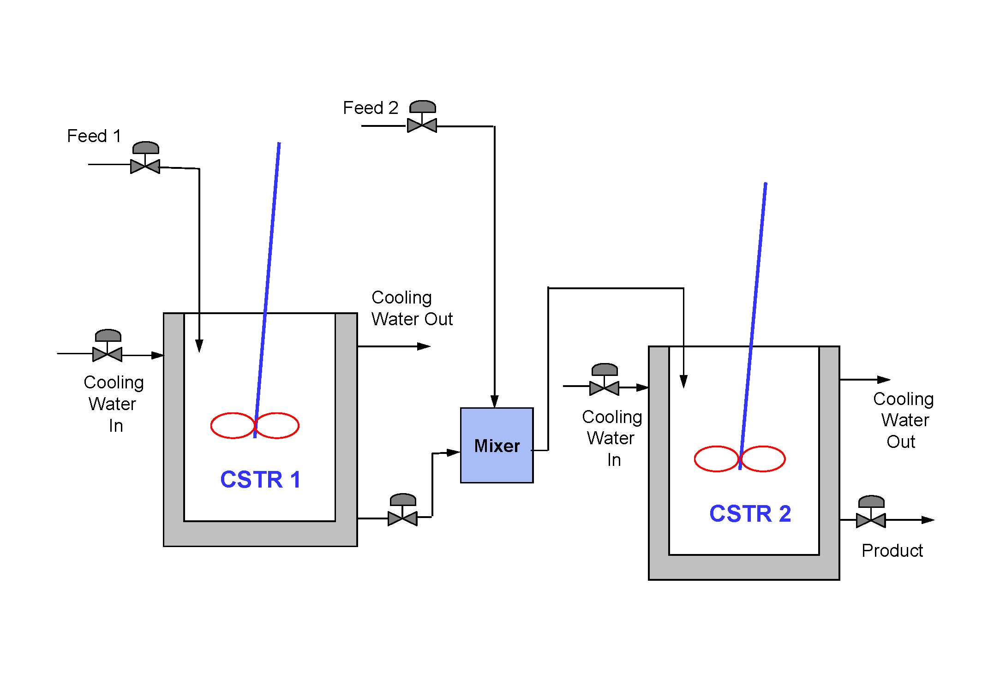
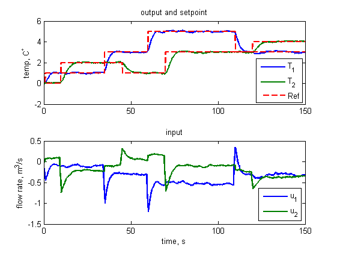

State Space MPC Tutorial
This document explains how to use the setup function and online controller returned by ssmpcsetup.
Contents
State-space MPC set-up
The online controller has to be set-up before use. To set-up the state space MPC controller, the user has to supply the state-space model, represented by A, B, C and D matrices (Note: it should be in discrete-time), the predication horizon, P, moving horizon, M and performance weights, Q and R. The default initial state and input are set to zero.
SSMPC=MPCSETUP(A,B,C,D,P,M,Q,R,X0,U0);
Online controller
The returned function handle from the MPC setup program is an online controller, SSMPC. The controller is called by proving two inputs: current measurement, Y and future reference, Ref. On return, it produces the optimal input, U for next step:
U = SSMPC(Y,Ref);
A two-CSTR example
A two-CSTR (Continuous Stired Reaction Tank) process is shown as follows.

A linear state space of the model is developed for the plant. The model has six states, two inputs (two cooling water flow rates) and two disturbances (cooling water temperatures). The measured outputs are two tank temperatures. Further details of the process can be find in 1. Cao, Y and Yang, ZJ, "Multiobjective process controllability analysis", Computers and Chemical Engineering , 28(2004), 83--90. 2. Al Seyab, RK and Cao, Y, "Differential recurrent neural network based predictive control", Computers and Chemical Engineering , to appear.
The discrete model with sampling rate 0.1 s is as follows:
A=[ 0.1555 -13.7665 -0.0604 0 0 0
0.0010 1.0008 0.0068 0 0 0
0 0.0374 0.9232 0 0 0
0.0015 -0.1024 -0.0003 0.1587 -13.6705 -0.0506
0 0.0061 0 0.0006 0.9929 0.0057
0 0.0001 0 0 0.0366 0.9398];
Bu=[0.0001 0
0 0
-0.0036 0
0 0.0001
0 0
0 -0.0028];
Bd=[ 0 0
0 0
0.0013 0
0 0
0 0
0 0.0008];
C=[0 362.995 0 0 0 0
0 0 0 0 362.995 0];
D=zeros(2,2);
MPC parameters
The MPC controller is configured with following parameters. Prediction horizon and moving horizon
p=10;
m=3;
% Performance wights
Q=1.5*eye(2*p);
R=eye(2*m);
MPC set-up
The MPC controller is set-up by calling SSMPCSETUP:
ssmpc=mpcsetup(A,Bu,C,D,p,m,Q,R);
Simulation
150 seconds (1500 sampling intervals) simulation is conducted with several setpoint changes and random cooling water temperature changes within positive and negative 1 degree. Simulation length and variables for results
N=1500; x0=zeros(6,1); Y=zeros(N,2); U=zeros(N,2); % Predefined reference T=zeros(N,2); T(10:N,1)=1; T(351:N,1)=3; T(600:N,1)=5; T(1100:N,1)=3; T(100:N,2)=2; T(451:N,2)=1; T(700:N,2)=3; T(1200:N,2)=4; % Simulation
for k=1:N % Process disturbances w=Bd*(rand(2,1)-0.5)*2; % Measurements noise v=0.01*randn(2,1); % actual measurement y=C*x0+v; % online controller u=ssmpc(y,T(k:end,:)'); % plant update x0=A*x0+Bu*u+w; % save results Y(k,:)=y'; U(k,:)=u'; end
Results
The simulation results are summarized in two sub-plots.
t=(0:N-1)*0.1; subplot(211) plot(t,Y,t,T,'r--','linewidth',2) title('output and setpoint') ylabel('temp, C^\circ') legend('T_1','T_2','Ref','location','southeast') subplot(212) stairs(t,U,'linewidth',2) legend('u_1','u_2','location','southeast') title('input') ylabel('flow rate, m^3/s') xlabel('time, s')